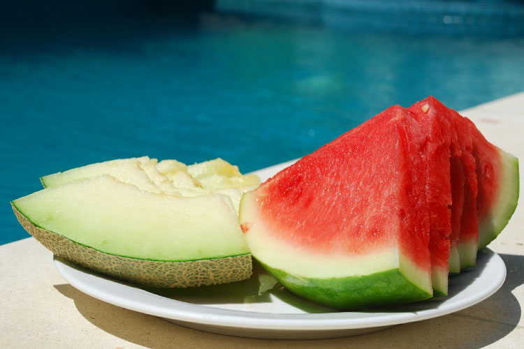

Que Alimentos Devem Ficar de Fora do Frigorífico?

A maneira com que os alimentos são armazenados é um dos pontos que fazem toda diferença nas suas conservações. É muito comum achar que o simples fato de colocar um determinado alimento no frigorífico é garantia de prolongar sua vida útil.
Mas a verdade é que alguns itens precisam de ventilação e luz natural. No entanto, esse detalhe tão importante é algo que a grande maioria ignora.
QUAIS OS ALIMENTOS QUE NÃO DEVEM SER GUARDADOS NO FRIGORIFICO?
Saiba quais são alguns dos alimentos que costumamos armazenar no frigorífico, mas que na verdade não devem ficar ali:
Cebola: A humidade no frigorífico faz com que a cebola amoleça mais rápido. A melhor forma de armazenamento é em local escuro, dentro de sacos de papel abertos, sacos de junta ou caixas de madeira. Outra dica é não deixar perto de batatas, que colaboram para que ela apodreça mais rápido.
Alho: É o mesmo caso da cebola. A humidade faz com que o alimento fique sem sabor, a textura elástica e pode até mesmo criar mofo. O melhor é armazenar da mesma forma em que guarda a cebola.
Mel: O mel não precisa estar no frigorífico, nem mesmo após aberto. Esse tipo de armazenamento faz com que ele engrosse e o açúcar cristalize. Coloque-o dentro da despensa ou no armário da cozinha.
Batatas: No frigorífico, o amido da batata transforma-se em açúcar e muda de sabor, de cor e de textura. Por isso, prefira armazenar dentro da despensa, desde que seja um ambiente escuro, fresco e arejado. Vale ainda guardar a batata em um saco de papel aberto, sacos de junta ou caixas de madeira.
Pão: A refrigeração pode fazer com que o pão resseque mais rápido e perca sabor. No entanto, congelá-lo pode ser uma opção para quem não pretende comer em até quatro dias (tempo máximo recomendado para consumo).
Café: Há quem prefira colocar o pó de café no frigorífico e isso não é, necessariamente, um problema. A questão é que o alimento costuma absorver odores de outros produtos e, por isso, a dica é colocá-lo em um recipiente hermeticamente fechado.
Manjericão: Esse é um tipo de tempero natural que confere sabor extra às receitas. A melhor forma de armazená-lo é fora do frigorífico. A dica é lavar bem, secar, cortar os caules em diagonais e deixá-lo em um copo com água e coberto com um saco plástico.
Morango: Se acabou de colher morangos, não os coloque no frigorífico, pois isso pode afetar o sabor e a textura da fruta. Além disso, aumenta também o risco de mofo. Prefira deixar os morangos recém-colhidos em temperatura ambiente.
Melão e melancia: Essas duas frutas devem ser mantidas inteiras fora do frigorífico. Isso porque alguns estudos mostraram que em temperatura ambiente, os seus antioxidantes são preservados. Após cortadas, pode armazená-las no frigorífico, mas no máximo quatro dias.
Tomate: É muito comum deixar o tomate no frigorífico, mas esse é um grande erro. As temperaturas mais baixas afetam a sua estrutura celular e deixam a textura e o sabor desagradáveis. Deixe o tomate em temperatura ambiente e longe de luz solar direta.
Maçã: A maçã pode ser conservada por até três semanas fora do frigorífico. Por isso, prefira deixá-la na fruteira, em temperada ambiente.